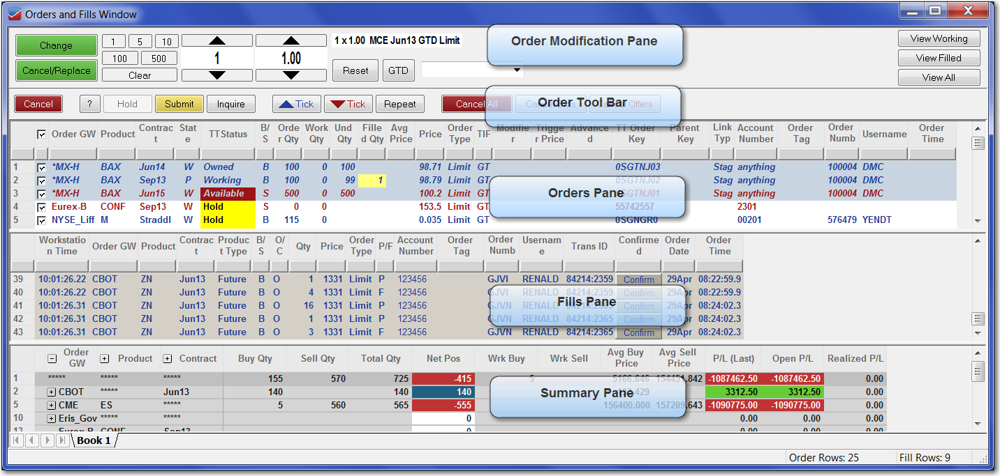
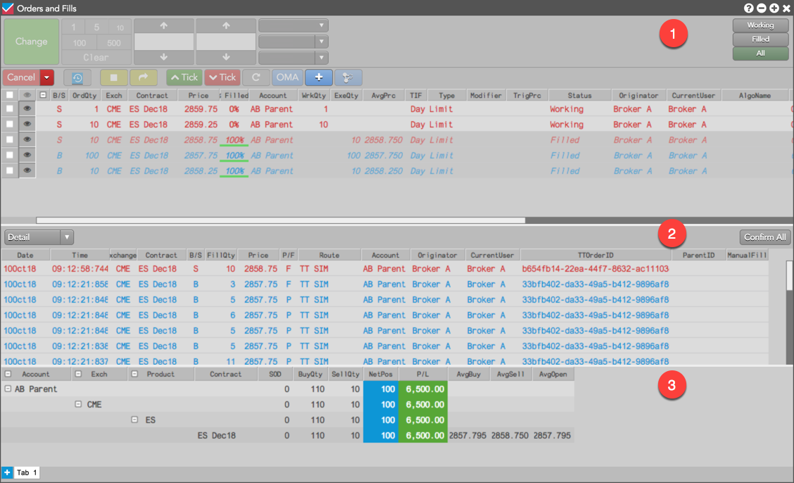
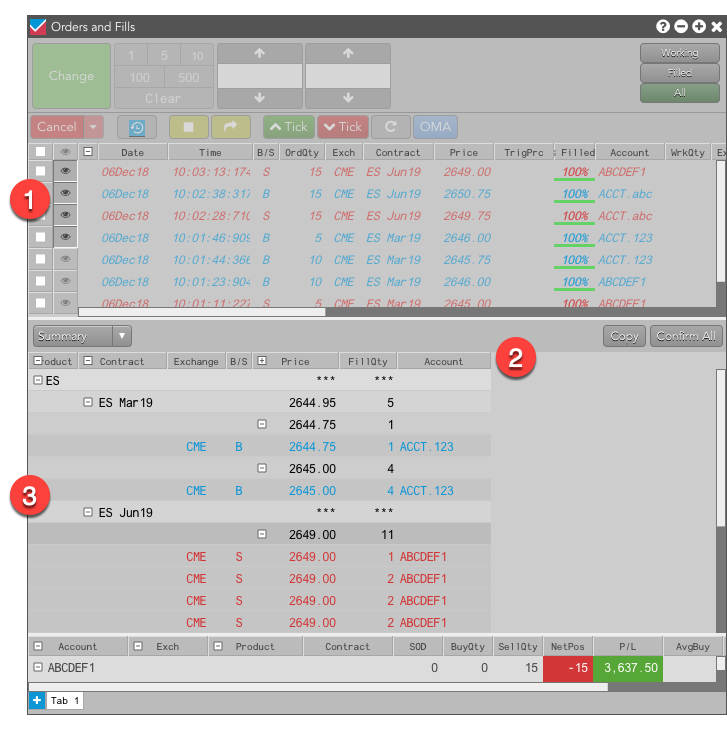

The X_TRADER Orders and Fills Window let you manage your working orders and fills.

The TT Orders and Fills widget helps you easily monitor and manage your working orders and fills. It combines the features and functionality of the Order Book, Fills and Positions widgets into a single widget.

Fill Recapper is an add-on application to X_TRADER Pro that can be used to manage fills, perform post-trade allocations and export fills. In TT, the Orders and Fills Window implements much of the same functionality. Using the Orders and Fills panes, you can easily select a set of orders in the Orders pane and then view all of the individual fills, along with their respective price, quantity and side, that correspond to those orders in the Fills pane.

The Orders and Fills widget also makes it easy for brokers to communicate order activity with their clients. Using the Fills pane, brokers can quickly confirm fills and use filters to display only unconfirmed fills. Brokers can also create fill summary reports that can be shared with clients. After filtering fills by the desired criteria, such as by instrument or account, specific fills can be exported to a .csv file and sent to a client to view the fills in a spreadsheet application.